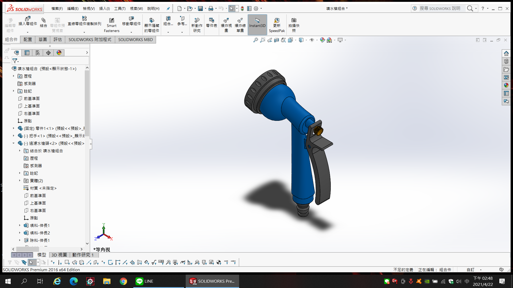

題目:灑水器動機 :不同於傳統灑水器此為多段式灑水狀/
扁平可避免作物因澆水時水柱衝力太大洗車/
可洗門窗、蔬菜花草園藝澆水

零件圖區
/downloads/十字.STL /downloads/十字螺栓.STL /downloads/十字螺栓1.STL /downloads/把手.STL /downloads/止回閥.STL/downloads/十字螺釘M3.STL /downloads/四分外牙.STL /downloads/珠鍊式接頭.STL /downloads/接頭.STL /downloads/過濾水槍頭.STL /downloads/零件1.STL /downloads/綠組 - 綠-1.STL /downloads/零件3.STL/downloads/墊圈.STL /downloads/管束還.STL /downloads/防漏.STL /downloads/綠組 - 水管奶嘴接頭-1.STL /downloads/綠.STL/downloads/綠組 - 零件3-1.STL /downloads/綠組 - 練朱-1.STL /downloads/噴水槍組合 - hex bolt gradec_iso-1.STL /downloads/噴水槍組合 - countersunk raised head cross recess screw_iso-1.STL /downloads/噴水槍組合 - 把手-1.STL /downloads/噴水槍組合 - 固定-1.STL /downloads/噴水槍組合 - 過濾水槍頭-1.STL /downloads/噴水槍組合 - 零件1-1.STL /downloads/噴水槍組合 - 墊圈-1.STL /downloads/噴水槍組合 - 噴水槍街頭-1.STL/downloads/噴水槍組合 - 噴水槍頭-1.STL /downloads/噴水槍組合 - 彈簧-1.STL /downloads/噴水槍街頭.STL /downloads/噴水槍頭.STL /downloads/彈簧.STL /downloads/彈簧-2.STL /downloads/練朱.STL /downloads/螺栓.STL /downloads/翻上墊圈.STL /downloads/藍色組合 - 止回閥-1.STL /downloads/藍色組合 - 四分外牙-1.STL /downloads/藍色組合 - 管束還-1.STL /downloads/藍色組合 - 彈簧-2-2.STL /downloads/固定.STL /downloads/水管奶嘴接頭.STL
Copyright © All rights reserved | This template is made with by Colorlib